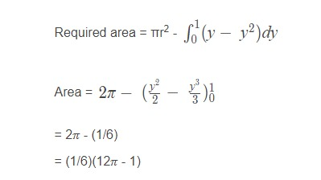
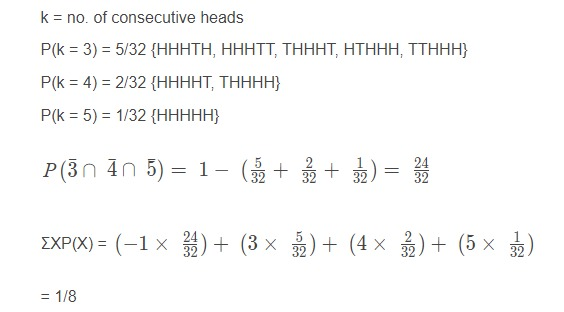

⚪"क्षेत्र का क्षेत्रफल, वृत्त x2 + y2 = 2 से घिरा है, जो परवलय y2 = और सीधी रेखा = से घिरे क्षेत्र के लिए उभयनिष्ठ नहीं है, है
बरोबर उत्तर: (1/6)(12𝜋 − 1)
Explanation:अभीष्ट क्षेत्रफल = वृत्त का क्षेत्रफल - दी गई रेखा और परवलय से घिरा क्षेत्रफल

⚪ एकूण सहा-अंकी संख्यांची संख्या ज्यात फक्त आणि सर्व पाच अंक 1,3,5,7 आणि 9 दिसतात
बरोबर उत्तर: (5/2) 6!
Explanation:सर्व 5 अंक = 5C5 = 1 मार्ग निवडणे
आता, आपल्याला 6 अंकी संख्या = 5C1 = 5 मार्ग बनवण्यासाठी आणखी एक अंक निवडण्याची आवश्यकता आहे
क्रमपरिवर्तनांची एकूण संख्या = 6!/2!
एकूण संख्या = 5C5×5C1×(6!/2!)
= (5/2) 6!
⚪जर Re (z-1)/(2z + i) = 1, जेथे z = x + iy, नंतर बिंदू (x, y) a वर आहे
बरोबर उत्तर: वर्तुळ ज्याचा व्यास √5/2 आहे
Explanation:z = x + iy
x+iy−1/2x+2iy+i = (x−1)+iy/2x+i(2y+1)(2x−i(2y+1)/2x−i(2y+1))
2x(x−1)+y(2y+1)/4x^2+(2y+1)^2 = 1
2x^2 + 2y^2 - 2x + y = 4x^2 + 4y^2 + 4y + 1
x^2 + y^2 + x + (3/2)y + (1/2) = 0
मंडळाचे केंद्र असेल (-1/2, -3/4)
त्रिज्या = √[(1/4) + (9/16) - (1/2)] = √5/4
व्यास = √5/2
⚪एक निष्पक्ष नाणे 5 वेळा फेकले जाते. समजा की variable = 3, 4, 5 साठी 𝑘 सलग डोके मिळवल्यास व्हेरिएबल the हे मूल्य दिले जाते, अन्यथा the मूल्य -1 घेते. Of चे अपेक्षित मूल्य आहे
बरोबर उत्तर: 1/8
Explanation:

⚪ जर लंबवर्तुळाच्या केंद्रबिंदूमधील अंतर 6 असेल आणि त्याच्या निर्देशांकांमधील अंतर 12 असेल तर त्याच्या अक्षांश रेक्टमची लांबी